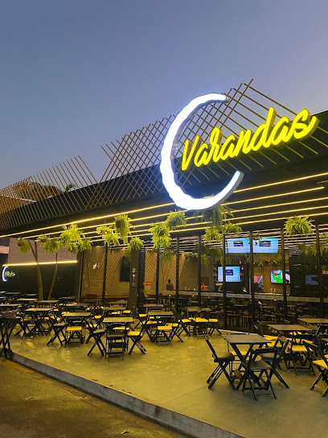

Comida boa em momentos especiais.
Varandas, bar e restaurante no centro de São Gabriel do Oeste. Almoço, jantar, porções e chopp gelado, com música ao vivo nas noites de show.
Conferindo o horário…

Um dia no Varandas, hora a hora.
11h
A varanda abre para o almoço.
Prato do dia, churrasco e grelhados servidos até as 13h30. Aos sábados, feijoada.
15h
A cozinha respira.
Entre o almoço e o jantar o salão se prepara: mesas, gelo, chopp na temperatura certa.
18h
O letreiro acende.
O C aberto da fachada ilumina a Rua Paraná e o jantar começa: pratos, porções e espetadas.
20h30
Chopp gelado na mesa.
Porção para dividir, drinks da casa e a mesa cheia de gente que veio ficar.
23h
Música ao vivo, até o último copo.
Sextas e sábados a casa fecha às 23h30. A agenda dos shows sai no Instagram.
Uma varanda aberta no centro.
Almoço, jantar e petisco
O Varandas virou ponto de encontro em São Gabriel do Oeste: almoço do dia a dia, jantar em família ou aquela cerveja gelada com os amigos.
Feito para ficar
Mesas amplas, plantas penduradas no ripado e um salão aberto para a rua. Dá para conversar em paz, e as crianças têm espaço.
Que horas você vem?
Gire o relógio, escolha o dia e quantas pessoas. A reserva chega pronta no WhatsApp da casa.
A casa em números.
4,6
nota no Google, em 378 avaliações
14,2 mil
seguidores no Instagram
1999
o número da porta, na Rua Paraná
Nota e seguidores conforme consulta recente; confirmar com o cliente antes de publicar.
Venha para a varanda.
Rua Paraná, 1999
Centro · São Gabriel do Oeste, MS